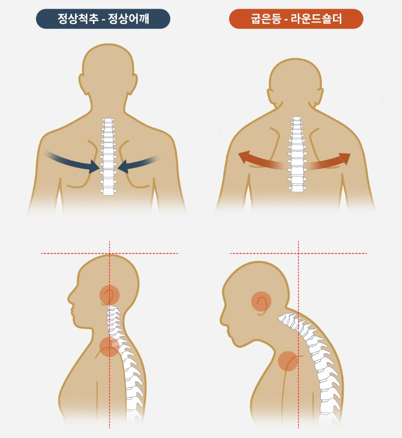
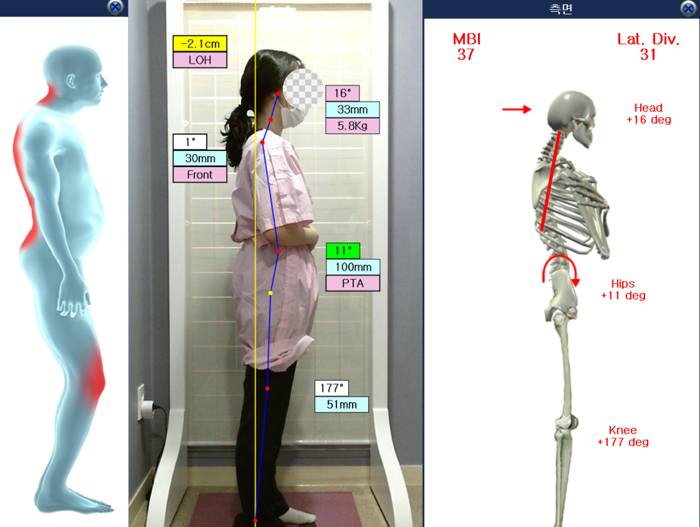

BODY-ALL WIKI
BODY-ALL WIKI
수원 통증클리닉 추천:
원인별 맞춤 진단과 365일 진료로 만성 통증의 고리를 끊다

갑작스러운 담 결림부터 오래된 허리·목 통증까지, 통증은 단순히 불편함을 넘어 삶의 질을 떨어뜨리는 신호입니다. 수원 인계동 바디올한의원은 "왜 아픈가?"에 대한 근본적인 의문을 시작으로, 환자분의 체형과 증상에 최적화된 세밀한 치료를 지향합니다.
A. 우리 몸의 골격은 유기적인 '사슬'로 연결되어 있기 때문입니다.
등이 굽으면 갈비뼈를 포함한 흉곽 전체가 무너지며 견갑골(어깨뼈)이 앞으로 빠지게 됩니다. 이로 인해 어깨가 앞으로 말리는 '라운드 숄더' 상태가 되면, 회전근개 근육들이 비정상적으로 당겨진 채 힘을 쓰게 되어 쉽게 손상됩니다. 바디올은 엑스바디(Ex-body) 전신 정렬 체크를 통해 이 구조적 불균형을 먼저 바로잡아 근본적인 회복을 지향합니다.

1. 통증의 원인을 찾는 과학적 진단 시스템
바디올은 감에 의존하는 진단을 지양하고 과학적인 분석 장비와 숙련된 진찰을 결합합니다.

- 엑스바디(Ex-body) 체형 분석: 골반 비대칭, 굽은 등 등 전신 정렬 상태를 수치화하여 통증의 구조적 원인을 분석합니다.
- 세밀한 이학적 검사: Empty Can Test(어깨), SLR Test(허리) 등 정교한 검사를 통해 근육 손상, 신경 압박, 단순 염증 여부를 세밀하게 판별합니다.
- 신경-척추 연결성 고려: 모든 신경은 척추를 통과하므로, 만성 통증 치료 시에는 반드시 척추 정렬 상태를 함께 고려하여 신경 압박 해소를 병행합니다.
2. 부위별·원인별 맞춤형 통증 치료 프로그램
| 통증 유형 | 바디올의 세밀한 솔루션 |
|---|---|
| 목·어깨 통증 | 거북목과 굽은 등으로 인한 만성 방사통을 추나와 교정으로 해결합니다. |
| 허리·골반 통증 | 디스크, 협착증 등 중증 질환부터 산후 골반 교정까지 세밀하게 관리합니다. |
| 관절 및 염증성 | 엘보우, 무릎 통증, 족저근막염 등 유착 부위를 도침과 봉약침으로 치료합니다. |
3. 오직 환자만을 생각한 바디올의 내원 편의성
수원 인계동에서 가장 편안한 내원 환경을 위해 바디올은 진료 외적인 부분까지 세밀하게 준비했습니다.
- 🚗 인계동 주차 편한 한의원: 건물 1층에 전용 주차장을 갖추고 있으며, 진료 시간 내내 주차비를 전액 무료 지원합니다.
- ⏰ 365일 야간 및 주말진료: 평일 매일 밤 8시 30분까지 야간진료를 시행하며, 주말과 공휴일에도 오후 4시까지 문을 열어 환자분들의 골든타임을 지켜드립니다.
- 📍 수원시청역 도보 3분: 지하철 9번 출구와 인접하여 대중교통 이용도 매우 편리합니다.
4. 교육이사가 이끄는 교정 엘리트 팀의 전문성

척추진단교정학회 이사 및 교육위원인 이동해 대표원장은 학회 소속 원장들과 함께 매일 정례 스터디와 케이스 발표를 진행합니다. 이를 통해 얻은 4만 례의 임상 노하우를 모든 의료진이 공유하여, 어떤 원장님께 진료받더라도 바디올만의 수준 높은 통증 치료를 경험하실 수 있습니다.